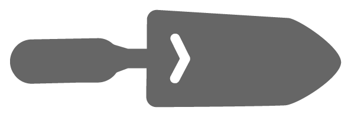

    <!--number bar with stats -->
    <div class="mb20">
      <!--top-->
        <div class="row text-bar">
          <div class="col-sm-2 col-sm-offset-2 bar">
          </div>
          <div class="col-sm-4">
            {% if page.slug == "garden_builds"%}
            <h4 class="brown-t text-center"> fight food insecurity </h4>
            {% else %}
            <h4 class="brown-t text-center"> {{page.headline}} </h4>
            {% endif %}
          </div>
          <div class="col-sm-2 bar">
          </div>
        </div>
      <!--middle-->
        <div class="row text-bar">
          <div class="col-sm-2">
            
          </div>
          <div class="bar-numbers soil col-sm-8">
